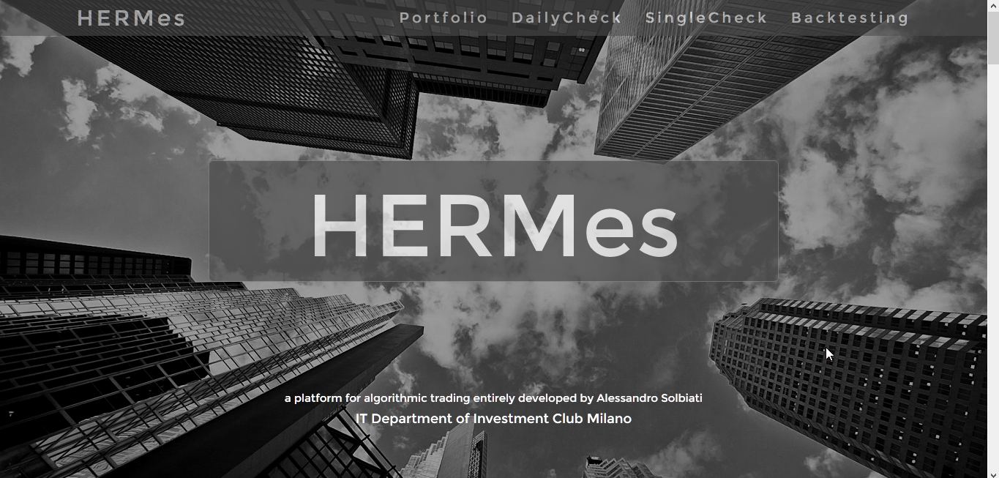
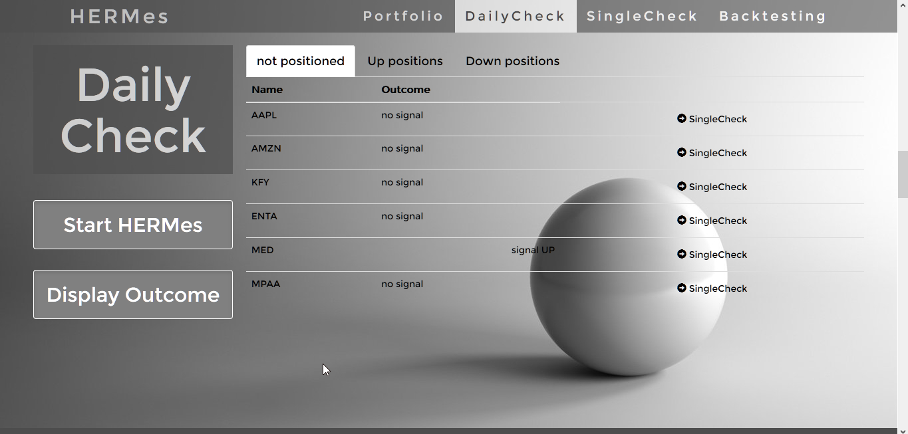
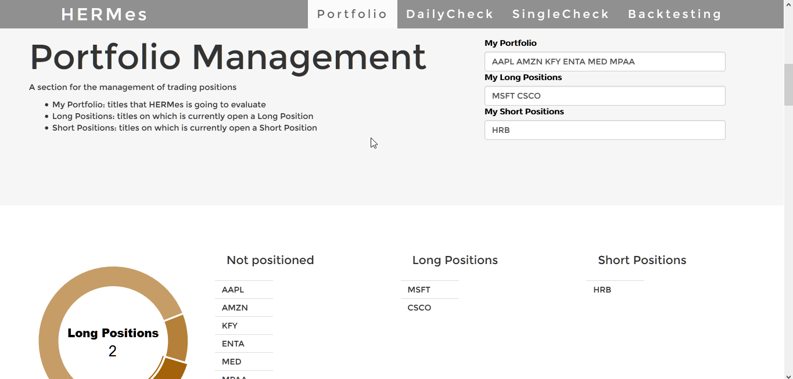
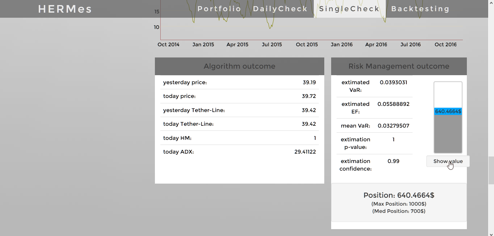
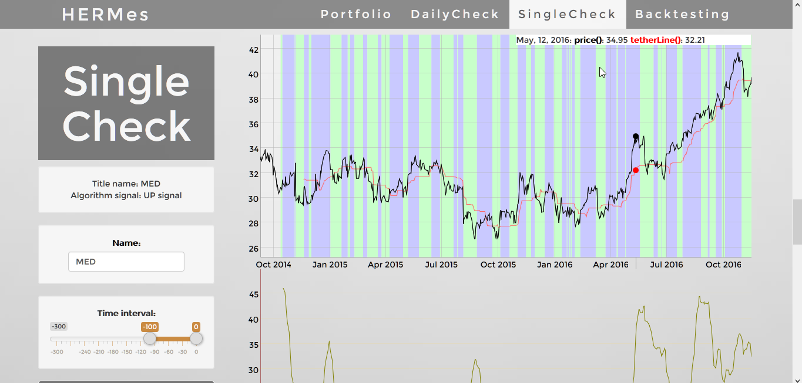

HERMes
A platform for algorithmic trading developed by the IT Dept of Investment Club Milano

The three Cores of HERMes
Trading Algorithm
Trading Algorithm
A Trend-based Trading Algorithm that uses a combination of three financial indicator, namely HMA, TetherLine and ADX, to individuate the start of a possible long-term trend in the prices of a stock. If you want to know more about the theoretical functioning of the trend-based algorithm, I recently wrote an article(a Trend-Oriented trading system)on our website InvestmentClubMilano about it. On the practical side, I implemented the financial indicators as well as the algorithm's functions in R and consequently used them in the server-side of the Web Application.
Risk Management
An implementation on R of the Exponential-Weighted Moving-Average model for volatility by RiskMetrics™ (JPMorgan and Reuters 1996), used to dinamically model and compute the risk associated with and asset's return. I also wrote another article (EWMA_RiskMetrics()) explaining the functioning of the risk evaluation part of the software.
User Interface
A one-page web application with features like Portfolio Management, Daily Check, Single Check and Backtesting that provides the user an intuitive interface to access the full power of HERMes. Here you can find some screenshot from the user-interface.
   